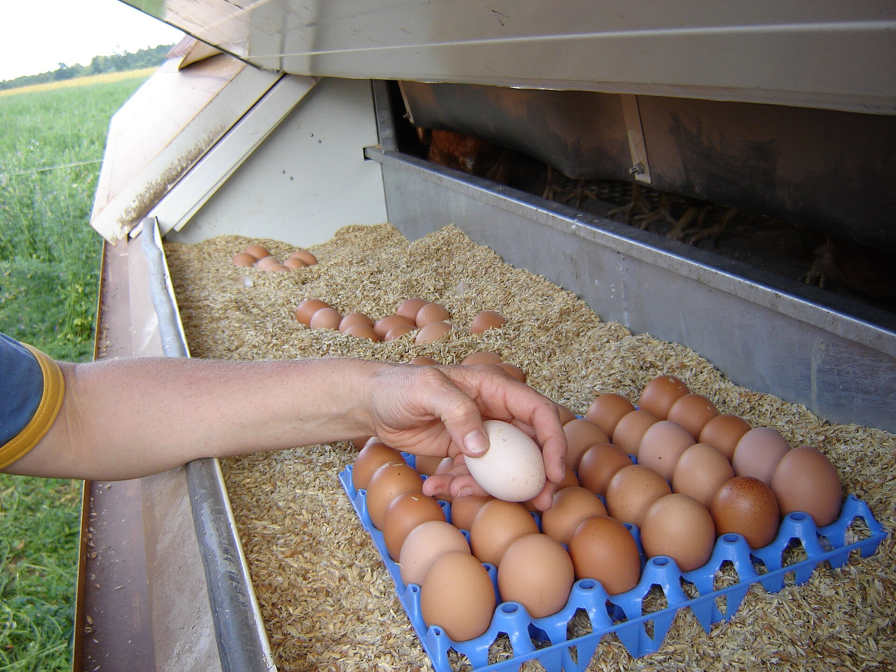

By the end of class you'll have a research question you sharpened to "strong", scoped, answerable, and worth doing, ready to lock a topic on Thursday. Two quick tools do the heavy lifting: a card sort to feel strong from weak, then a strengthener where you run your own question through six checks.
Meet the modules and lock your topic. Our first interactive module, done together in class; you lock your topic and questions and practice the download and turn-in.
Nothing due today. P1 Literature Review: Week 5. Notebook check-ins: midterm (Week 8) and end of term (Week 15).

Precise wording; a reader gets your aim in one read, no vague terms.
Strong: "When shoppers read 'natural' on an egg carton, can they say what it legally means?"
One problem or relationship, scoped small enough to actually finish.
Strong: "Which sustainability words on egg cartons at one Boone grocery are legally regulated?"
Takes analysis or cause-and-effect, not a yes/no or a quick lookup.
Strong: "How do 'organic' and 'natural' claims differ in what they promise a shopper?"
You can get the data with the time, tools, and access you have this semester.
Strong: "How do first-year students here interpret 'regenerative' on a product?"
Answers a real gap and matters to someone beyond you.
Strong: "Do 'local' produce signs match where the food is grown, and who could that mislead?"
You can study it safely, no harm, privacy protected, no vulnerable group you can't reach ethically.
Strong: "How do adult shoppers describe trusting or distrusting carton claims?"
“Are food labels misleading?”
It's a yes/no, and every word is vague. Which labels? Misleading to whom? Nothing here you could go measure. It fails Clear, Focused, and Complex at once.
Feel the difference before you fix your own. Open the card sort, call each one, then we name why.
drsarahlong.github.io/ENG_3090-/question-strengthener.html